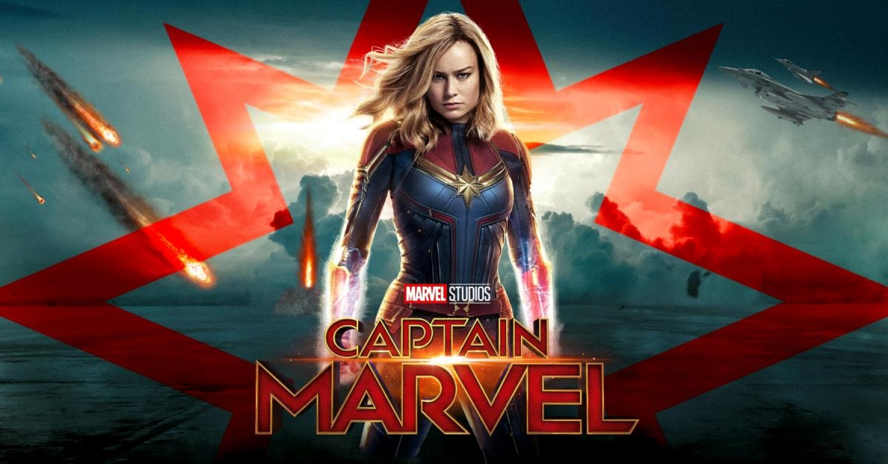
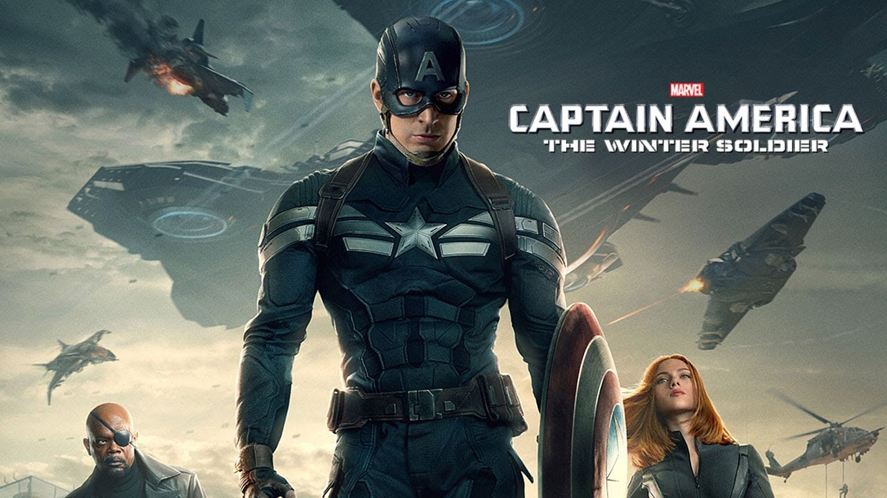

CAPTAIN AMERICA: THE FIRST AVENGER (2011)
It is 1941 and the world is in the throes of war. Steve Rogers (Chris Evans) wants to do his part and join America's armed forces, but the military rejects him because of his small stature. Finally, Steve gets his chance when he is accepted into an experimental program that turns him into a supersoldier called Captain America. Joining forces with Bucky Barnes (Sebastian Stan) and Peggy Carter (Hayley Atwell), Captain America leads the fight against the Nazi-backed HYDRA organization.
CAPTAIN MARVEL (2019)
Captain Marvel is an extraterrestrial Kree warrior who finds herself caught in the middle of an intergalactic battle between her people and the Skrulls. Living on Earth in 1995, she keeps having recurring memories of another life as U.S. Air Force pilot Carol Danvers. With help from Nick Fury, Captain Marvel tries to uncover the secrets of her past while harnessing her special superpowers to end the war with the evil Skrulls.

IRON MAN (2008)
A billionaire industrialist and genius inventor, Tony Stark (Robert Downey Jr.), is conducting weapons tests overseas, but terrorists kidnap him to force him to build a devastating weapon. Instead, he builds an armored suit and upends his captors. Returning to America, Stark refines the suit and uses it to combat crime and terrorism.
IRON MAN 2 (2010)
With the world now aware that he is Iron Man, billionaire inventor Tony Stark (Robert Downey Jr.) faces pressure from all sides to share his technology with the military. He is reluctant to divulge the secrets of his armored suit, fearing the information will fall into the wrong hands. With Pepper Potts (Gwyneth Paltrow) and "Rhodey" Rhodes (Don Cheadle) by his side, Tony must forge new alliances and confront a powerful new enemy.
THE INCREDIBLE HULK (2008)
Scientist Bruce Banner (Edward Norton) desperately seeks a cure for the gamma radiation that contaminated his cells and turned him into The Hulk. Cut off from his true love Betty Ross (Liv Tyler) and forced to hide from his nemesis, Gen. Thunderbolt Ross (William Hurt), Banner soon comes face-to-face with a new threat: a supremely powerful enemy known as The Abomination (Tim Roth).

THOR (2011)
As the son of Odin (Anthony Hopkins), king of the Norse gods, Thor (Chris Hemsworth) will soon inherit the throne of Asgard from his aging father. However, on the day that he is to be crowned, Thor reacts with brutality when the gods' enemies, the Frost Giants, enter the palace in violation of their treaty. As punishment, Odin banishes Thor to Earth. While Loki (Tom Hiddleston), Thor's brother, plots mischief in Asgard, Thor, now stripped of his powers, faces his greatest threat.
When Thor's evil brother, Loki (Tom Hiddleston), gains access to the unlimited power of the energy cube called the Tesseract, Nick Fury (Samuel L. Jackson), director of S.H.I.E.L.D., initiates a superhero recruitment effort to defeat the unprecedented threat to Earth. Joining Fury's "dream team" are Iron Man (Robert Downey Jr.), Captain America (Chris Evans), the Hulk (Mark Ruffalo), Thor (Chris Hemsworth), the Black Widow (Scarlett Johansson) and Hawkeye (Jeremy Renner).
In ancient times, the gods of Asgard fought and won a war against an evil race known as the Dark Elves. The survivors were neutralized, and their ultimate weapon -- the Aether -- was buried in a secret location. Hundreds of years later, Jane Foster (Natalie Portman) finds the Aether and becomes its host, forcing Thor (Chris Hemsworth) to bring her to Asgard before Dark Elf Malekith (Christopher Eccleston) captures her and uses the weapon to destroy the Nine Realms -- including Earth.
Plagued with worry and insomnia since saving New York from destruction, Tony Stark (Robert Downey Jr.), now, is more dependent on the suits that give him his Iron Man persona -- so much so that every aspect of his life is affected, including his relationship with Pepper (Gwyneth Paltrow). After a malevolent enemy known as the Mandarin (Ben Kingsley) reduces his personal world to rubble, Tony must rely solely on instinct and ingenuity to avenge his losses and protect the people he loves.
After the cataclysmic events in New York with his fellow Avengers, Steve Rogers, aka Captain America (Chris Evans), lives in the nation's capital as he tries to adjust to modern times. An attack on a S.H.I.E.L.D. colleague throws Rogers into a web of intrigue that places the whole world at risk. Joining forces with the Black Widow (Scarlett Johansson) and a new ally, the Falcon, Rogers struggles to expose an ever-widening conspiracy, but he and his team soon come up against an unexpected enemy.

Brash space adventurer Peter Quill (Chris Pratt) finds himself the quarry of relentless bounty hunters after he steals an orb coveted by Ronan, a powerful villain. To evade Ronan, Quill is forced into an uneasy truce with four disparate misfits: gun-toting Rocket Raccoon, treelike- humanoid Groot, enigmatic Gamora, and vengeance-driven Drax the Destroyer. But when he discovers the orb's true power and the cosmic threat it poses, Quill must rally his ragtag group to save the universe.

Peter Quill and his fellow Guardians are hired by a powerful alien race, the Sovereign, to protect their precious batteries from invaders. When it is discovered that Rocket has stolen the items they were sent to guard, the Sovereign dispatch their armada to search for vengeance. As the Guardians try to escape, the mystery of Peter's parentage is revealed.
When Tony Stark (Robert Downey Jr.) jump-starts a dormant peacekeeping program, things go terribly awry, forcing him, Thor (Chris Hemsworth), the Incredible Hulk (Mark Ruffalo) and the rest of the Avengers to reassemble. As the fate of Earth hangs in the balance, the team is put to the ultimate test as they battle Ultron, a technological terror hell-bent on human extinction. Along the way, they encounter two mysterious and powerful newcomers, Pietro and Wanda Maximoff.
Forced out of his own company by former protégé Darren Cross, Dr. Hank Pym (Michael Douglas) recruits the talents of Scott Lang (Paul Rudd), a master thief just released from prison. Lang becomes Ant-Man, trained by Pym and armed with a suit that allows him to shrink in size, possess superhuman strength and control an army of ants. The miniature hero must use his new skills to prevent Cross, also known as Yellowjacket, from perfecting the same technology and using it as a weapon for evil.

Political pressure mounts to install a system of accountability when the actions of the Avengers lead to collateral damage. The new status quo deeply divides members of the team. Captain America (Chris Evans) believes superheroes should remain free to defend humanity without government interference. Iron Man (Robert Downey Jr.) sharply disagrees and supports oversight. As the debate escalates into an all-out feud, Black Widow (Scarlett Johansson) and Hawkeye (Jeremy Renner) must pick a side.

Natasha Romanoff, aka Black Widow, confronts the darker parts of her ledger when a dangerous conspiracy with ties to her past arises. Pursued by a force that will stop at nothing to bring her down, Natasha must deal with her history as a spy, and the broken relationships left in her wake long before she became an Avenger.
Thrilled by his experience with the Avengers, young Peter Parker returns home to live with his Aunt May. Under the watchful eye of mentor Tony Stark, Parker starts to embrace his newfound identity as Spider-Man. He also tries to return to his normal daily routine -- distracted by thoughts of proving himself to be more than just a friendly neighborhood superhero. Peter must soon put his powers to the test when the evil Vulture emerges to threaten everything that he holds dear.

After the death of his father, T'Challa returns home to the African nation of Wakanda to take his rightful place as king. When a powerful enemy suddenly reappears, T'Challa's mettle as king -- and as Black Panther -- gets tested when he's drawn into a conflict that puts the fate of Wakanda and the entire world at risk. Faced with treachery and danger, the young king must rally his allies and release the full power of Black Panther to defeat his foes and secure the safety of his people.
Dr. Stephen Strange's (Benedict Cumberbatch) life changes after a car accident robs him of the use of his hands. When traditional medicine fails him, he looks for healing, and hope, in a mysterious enclave. He quickly learns that the enclave is at the front line of a battle against unseen dark forces bent on destroying reality. Before long, Strange is forced to choose between his life of fortune and status or leave it all behind to defend the world as the most powerful sorcerer in existence.

Imprisoned on the other side of the universe, the mighty Thor finds himself in a deadly gladiatorial contest that pits him against the Hulk, his former ally and fellow Avenger. Thor's quest for survival leads him in a race against time to prevent the all-powerful Hela from destroying his home world and the Asgardian civilization.
Scott Lang is grappling with the consequences of his choices as both a superhero and a father. Approached by Hope van Dyne and Dr. Hank Pym, Lang must once again don the Ant-Man suit and fight alongside the Wasp. The urgent mission soon leads to secret revelations from the past as the dynamic duo finds itself in an epic battle against a powerful new enemy.
Iron Man, Thor, the Hulk and the rest of the Avengers unite to battle their most powerful enemy yet -- the evil Thanos. On a mission to collect all six Infinity Stones, Thanos plans to use the artifacts to inflict his twisted will on reality. The fate of the planet and existence itself has never been more uncertain as everything the Avengers have fought for has led up to this moment.
Adrift in space with no food or water, Tony Stark sends a message to Pepper Potts as his oxygen supply starts to dwindle. Meanwhile, the remaining Avengers -- Thor, Black Widow, Captain America and Bruce Banner -- must figure out a way to bring back their vanquished allies for an epic showdown with Thanos -- the evil demigod who decimated the planet and the universe.